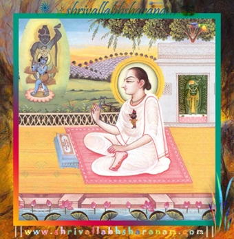

W E L C O M E T O "|||S H R I V A L L A B H S H A R A N A M|||" "|||S H R I P U S H T I M A R G|||" "|||THE PATH OF GRACE|||"
SHRI MANGL ACHARAN
SHRI KRISHNA I BOW DOWN MY HEAD TO YOUR LOTUS FEET.
YOU ARE THE GIVER OF SADH:
BUD-DHI: BLESS ME TO COMPLETE THIS ~~~WEBSITE ~~~
OF YOUR LILLAS AND GLORY, WHICH I HAVE UNDERTAKEN...
I KNOW
PRABHU (SHRI KRISHNA)
YOUR GLORY IS INDEFINATE AND NO ONE HAS COMPLETED THE SONG OF YOUR PRAISE TILL DATE
IF I KEEP TIME AS WITNESS AND JUDGE OF ALL YOUR LILLAS FROM THE
DAY YOU FIRST CREATED TIME
TILL NOW EVEN TIME IS SPEECHLES AND UNCALCULABLE THEN WHERE DO I STAND
I CAN ONLY MAKE AN JUST EFFORT
"HEY SHRI KRISHNA! PRABHU
AS LONG AS I LIVE THIS LIFE, THROUGH THE BLESSING OF
SHRI JAGADH GURU VALLABH,
SHRI MAHARANI YAMUNAJI AND BY YOUR FREE WILL
LET ME SERVE YOU,
PRAISE YOU-SING YOUR GLORY-PREACH THY GRACE TILL DEATH AND THEREAFTER TILL INFINITY........
YOUR AVTAAR IS FOR BETTERMENT OF MANKIND.
YOU ESTABLISH DHAR-MAH: AND DESTROY EVIL THE A-DHAR-MAH:
YOU ARE SO KIND THAT YOU PARDON THE BAD DEEDS OF MANKIND WHO SEEK REFUGE IN YOUR LOTUSFEET.
ONCE AGAIN I BOW DOWN, NOT ONLY MY HEAD BUT WHOLE BODY TO YOUR LOTUS FEET.
||JAI SHRI KRISHNA TO ALL VAISHNAVA'S|| ||SHRI HARI SHARANAM MAMAH:|| || SHRI GURUDEV SHARANAM MAMAH: || || SHRI MADH: VALLABH-VITHALLO SHARANAM MAMAH:|| || SHRI YAMUNAJI SHARANAM MAMAH: || || SHRI GIRIRAJ-JI SHARANAM MAMAH: || || SHRI KRISHNA SHARANAM MAMAH: || || SHRI VRAJ BHUMI SHARANAM MAMAH: || || OM NAMOH NARAYA-NA-YAH: || || OM NAMOH BAGHWATE VASUDEVA-YAH: || || OM VISH-NAVEH NAMAH: || || SHRI PUSHTI PURSHOTAM NAMAH: || || SHRI NATHJI SHARANAM MAMAH: || || SHRI NAVNEET PRIYAJI SHARANAM MAMAH: || || SHRI VITHAL NATHJI SHARANAM MAMAH: || || SHRI DWARKA-DESHJI SHARANAM MAMAH: || || SHRI GOKUL NATHJI SHARANAM MAMAH: || || SHRI GOKUL CHANDRAMAJI SHARANAM MAMAH:|| || SHRI BALKRISHNA JI SHARANAM MAMAH: || || SHRI MADAN MOHANJI SHARANAM MAMAH: || || SHRI SWAMINIJI SHARANAM MAMAH: || || SHRI DAMODHAR JI SHARANAM MAMAH: || || SHRI NATVAR PRABHU SHARANAM MAMAH: || || SHRI MUKUND RAI JI SHARANAM MAMAH: || || SHRI SHYAM LAL JI SHARANAM MAMAH: || || SHRI LALIT TRIBANGHI RAI JI SHARANAM MAMAH: || || SHRI ASHTHA BHUJAJI SHARANAM MAMAH: || || SHRI ASHTHA DWAJAJI SHARANAM MAMAH: || || SHRI LADLESH JI SHARANAM MAMAH: || || SHRI LALJI SHARANAM MAMAH: || || SHRI MOHAN PRABHU SHARANAM MAMAH: || |||| SHRI KRISHNA-YAH NAMAH: |||| |||| SHRI GOPIJAN VALLABH-YAH NAMAH: |||| |||| SHRI MADH-ACHA-RAYAH CHARAN KAMLE-BYO NAMAH: |||| |||| SHRI GUSAIN JI PARAM DAYALVE NAMAH: |||| |||| SHRI GURUVE NAMAH: |||| |||| SHRI KRISHNAH: SHARNAM MAMAH: ||||
Contents
All contents the of shrivallabhsharanam are displayed in this index page